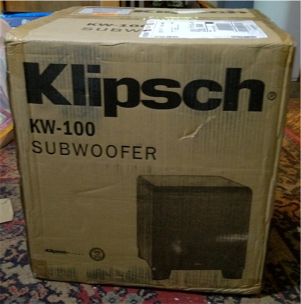
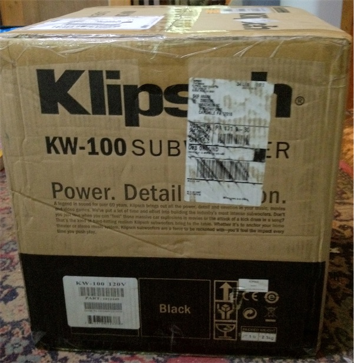
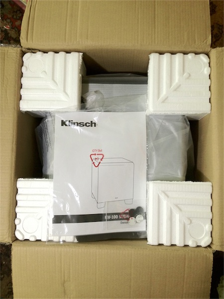
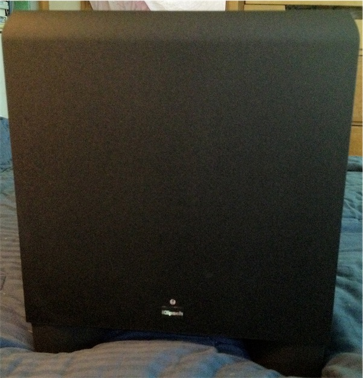
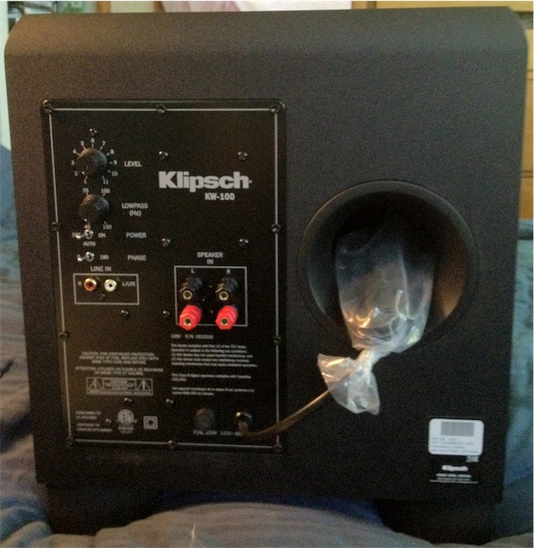
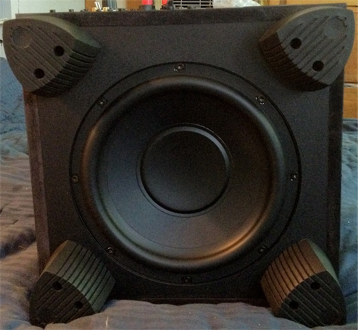
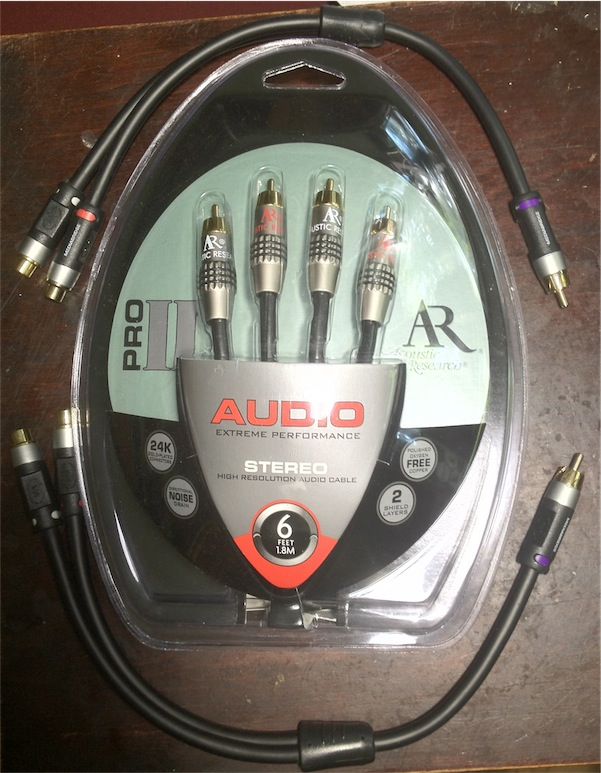
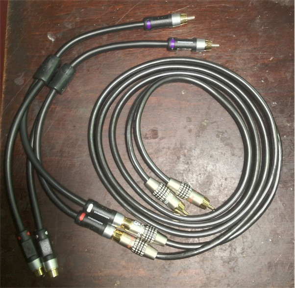
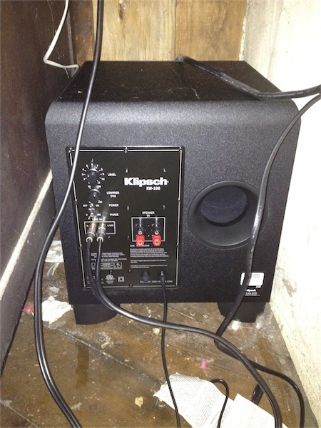

On Friday, August 24, I received from Amazon a Klipsch KW-100 subwoofer. This is the bottom of the Klipsch line of subwoofers, but it has a 10" speaker that goes down to 29hz, providing a nice bass for my Swan M200MkIII speakers, which peter out around 50hz.
I bought splitter RCA cables for the line between my NuForce µDac and the speakers. The subwoofer has its own mixer and amplifier for line-level signals. I control main volume now with the pot on the µDAC, and can easily adjust the treble with the pot on the Swan. The subwoofer has a volume control pot, too, and it's not real hard to get to, since I installed it with the back facing front, but I will rarely need to do that.
Click on any image below for a higher resolution version.
        
One side of the shipping box
The other side of the shipping box
Shipping box opened
Front of the speaker
Rear of the speaker
Bottom of the speaker
Cables packaged
Cables ready to hook up
Installed on the floor next to my desk